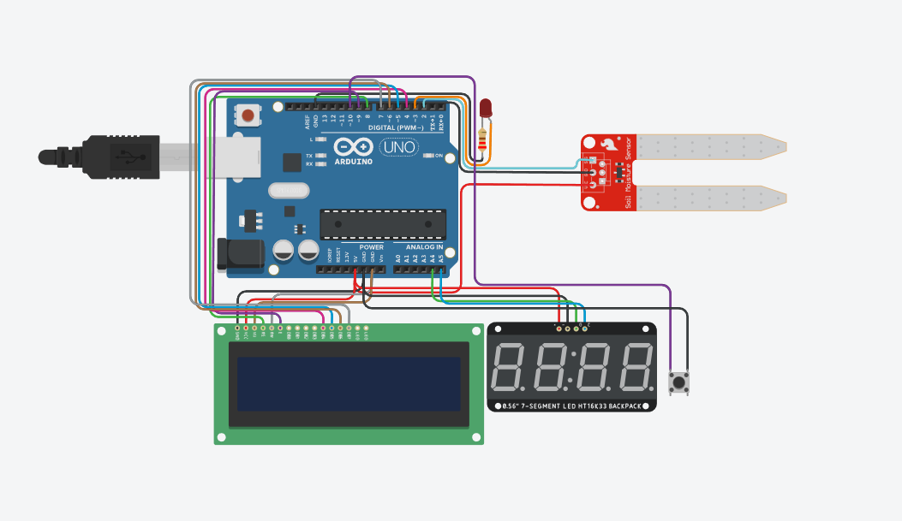

INTELLIGENCE
Un sistema autónomo de inteligencia botánica que corre directo en tu ESP32.
Mide en tiempo real la humedad de sustrato de 3 plantas de interior (Coco, Dracaena Tricolor y Dracaena), filtra el ruido eléctrico con 10 muestras por lectura, alerta en una pantalla LCD 16x2 I2C y sincroniza datos por Bluetooth Classic hacia el celular.
Proceso de Desarrollo en Banco de Trabajo
¡Fotos 100% reales del armado! 📸

Nota Técnica: Esquema conceptual inicial armado en Tinkercad para validar la lógica del divisor resistivo de humedad, visualización LCD e indicadores de riego antes de migrar al ESP32 con bus I2C y Bluetooth.
"¡10/10/2026! Buscando los componentes. La mayoría los tenía, solo me faltaban dos sensores de humedad."
"¡Empezamos con el desarrollo! Conectamos todos los sensores al ESP32 y la pantalla LCD 16x2 sobre la mesada para probar que todo prenda sin quemar nada."
.jpeg)
Nota Técnica: Integración del ESP32 NodeMCU en protoboard. Cableado de los 3 comparadores analógicos (AO) a las entradas del ADC1 (D34, D35, D32) y verificación del bus I2C (SDA=21, SCL=22) con el display LCD.
.jpeg)
Nota Técnica: Sensores insertados en sustrato real con rotulado manual de umbrales en macetas (Coco: 45%, Tricolor: 30%, Dracaena: 30%). Ensayos de hidratación dosificada con jeringa para calibrar constantes.
"¡Terminamosss! Cargamos el código, revisamos conexiones y calibramos los valores reales en tierra con Coco, Dracaena Tricolor y Dracaena."
Arquitectura & Pinout del ESP32
¿Por qué elegimos estos pines?
En el ESP32, el convertidor ADC2 comparte recursos internos con el transceptor inalámbrico y bloquea sus lecturas cuando se activa el Bluetooth. Por eso asignamos los 3 sensores exclusivamente al ADC1 (GPIOs 32 al 39), garantizando mediciones analógicas estables en todo momento.
Configuramos analogReadResolution(12) (rango de 0 a 4095) junto con analogSetAttenuation(ADC_11db) para cubrir la excursión completa de voltaje hasta ~3.3V sin saturar la entrada.
Permite controlar la pantalla LCD 16x2 (dirección hexadecimal 0x27) utilizando únicamente 2 líneas de comunicación en lugar de 12 pines GPIO paralelos.
Matemática, Filtrado & Algoritmos
Para eliminar picos de ruido eléctrico, la función leerSensorEstable() captura 10 lecturas consecutivas separadas por 2ms y calcula el promedio entero:
En tierra seca la resistencia sube (3400 = 0%) y en tierra húmeda conduce mejor (1400 = 100%). Se acota e invierte con constrain() y map():
Cada planta dispara la alerta REGAR! según su necesidad hídrica específica:
Usa millis() para medir cada 24 horas (86.400.000 ms) sin bloquear el procesador, y detecta con SerialBT.hasClient() cuando se conecta el celular para enviar la trama CSV en el acto.
Código Fuente Completo (.ino)
// ============================================================================
// PROYECTO: Bio Intelligence (PlantaClub) - Monitoreo Botánico con ESP32
// EVENTO: Coolest Projects Argentina 2026
// ============================================================================
#include "BluetoothSerial.h"
#include <Wire.h>
#include <LiquidCrystal_I2C.h>
BluetoothSerial SerialBT;
LiquidCrystal_I2C lcd(0x27, 16, 2);
// Pines AO de los 3 sensores (ADC1)
const int pinSensor1 = 34; // Coco (D34)
const int pinSensor2 = 35; // Dracaena Tricolor (D35)
const int pinSensor3 = 32; // Dracaena (D32)
const int VALOR_SECO = 3400;
const int VALOR_MOJADO = 1400;
// Límites de humedad para activar la alerta (en %)
const int limiteCoco = 45;
const int limiteTricolor = 30;
const int limiteDracaena = 30;
// Control de tiempo: 24 horas en milisegundos (24 * 60 * 60 * 1000)
unsigned long ultimoEnvio = 0;
const unsigned long INTERVALO = 86400000UL;
// Variable para detectar cuando el celular recién se conecta
bool celularConectadoAntes = false;
// Promedio de 10 lecturas para evitar saltos por ruido eléctrico
int leerSensorEstable(int pin) {
long suma = 0;
for (int i = 0; i < 10; i++) {
suma += analogRead(pin);
delay(2);
}
return suma / 10;
}
// Convierte la lectura cruda a porcentaje invirtiendo la escala
int calcularPorcentaje(int lecturaCruda) {
int lecturaAcotada = constrain(lecturaCruda, VALOR_MOJADO, VALOR_SECO);
return map(lecturaAcotada, VALOR_SECO, VALOR_MOJADO, 0, 100);
}
void medirYEnviar() {
int lectura1 = leerSensorEstable(pinSensor1);
int lectura2 = leerSensorEstable(pinSensor2);
int lectura3 = leerSensorEstable(pinSensor3);
int humCoco = calcularPorcentaje(lectura1);
int humTricolor = calcularPorcentaje(lectura2);
int humDracaena = calcularPorcentaje(lectura3);
String estado = "TODO OK";
if (humCoco < limiteCoco || humTricolor < limiteTricolor || humDracaena < limiteDracaena) {
estado = "REGAR!";
}
// 1. Mostrar en la pantalla LCD
lcd.clear();
lcd.setCursor(0, 0);
lcd.print("Co:"); lcd.print(humCoco); lcd.print("%");
lcd.setCursor(8, 0);
lcd.print("Tr:"); lcd.print(humTricolor); lcd.print("%");
lcd.setCursor(0, 1);
lcd.print("Dr:"); lcd.print(humDracaena); lcd.print("%");
lcd.setCursor(8, 1);
lcd.print(estado);
// 2. Enviar a la App por Bluetooth (Formato: Coco,Tricolor,Dracaena,Estado)
SerialBT.printf("%d,%d,%d,%s\n", humCoco, humTricolor, humDracaena, estado.c_str());
// 3. Mostrar en el Monitor Serie de la PC
Serial.printf("BT -> %d,%d,%d,%s | Crudos: Co(%d) Tr(%d) Dr(%d)\n",
humCoco, humTricolor, humDracaena, estado.c_str(), lectura1, lectura2, lectura3);
}
void setup() {
Serial.begin(115200);
// Inicia el Bluetooth con el nombre "PlantaClub"
SerialBT.begin("PlantaClub");
Serial.println("Bluetooth iniciado como 'PlantaClub'");
// Configuración del ADC del ESP32
analogReadResolution(12);
analogSetAttenuation(ADC_11db);
pinMode(pinSensor1, INPUT);
pinMode(pinSensor2, INPUT);
pinMode(pinSensor3, INPUT);
Wire.begin(21, 22);
lcd.init();
lcd.backlight();
lcd.setCursor(0, 0);
lcd.print("PlantaClub Listo");
lcd.setCursor(0, 1);
lcd.print("Modo 24 Horas");
delay(1500);
// Primera lectura apenas se enciende el ESP32
medirYEnviar();
}
void loop() {
unsigned long tiempoActual = millis();
// 1. Si el celular se acaba de conectar a la App, enviar lectura inmediata
bool celularConectadoAhora = SerialBT.hasClient();
if (celularConectadoAhora && !celularConectadoAntes) {
delay(500);
medirYEnviar();
}
celularConectadoAntes = celularConectadoAhora;
// 2. Actualización automática cada 24 horas (86.400.000 ms)
if (tiempoActual - ultimoEnvio >= INTERVALO) {
ultimoEnvio = tiempoActual;
medirYEnviar();
}
}El Futuro de Bio Intelligence 🌱
Guardar en memoria Flash/EEPROM cuántas horas lleva cada planta pidiendo agua (REGAR!).
Diseñar una placa PCB propia en KiCAD y una carcasa impresa en 3D resistente a salpicaduras.
Sumar relés y mini bombas sumergibles de 5V para hidratar cada maceta automáticamente.
¡Súmate a Bio Intelligence hoy!